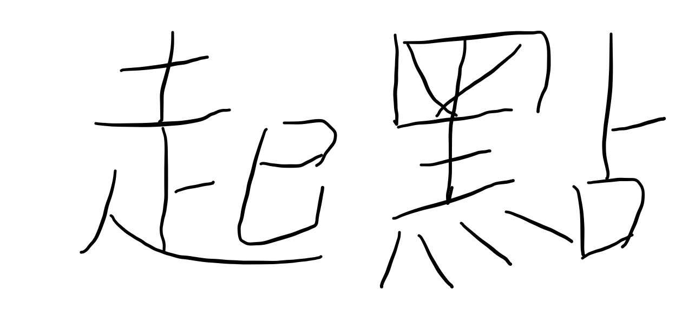

徐仁鴻
項目
內容
生日
2001年7月21日
性別
男生
學歷
國立金門大學資工系(現就讀)
桃園市立龍潭高中
桃園市立平南國中
桃園市立山豐國小
個人特質
情緒起伏大，內心戲多，在你看不
見的地方醞釀了無數的思想風暴
未來期望
出國交換
考取研究所
賺他一個億!
來自桃園市山仔頂的冒失鬼
做事有些脫線
又容易陷入內心小劇場
往往會抱著"那就這樣吧"
的心態一股腦衝出去
然後又在想"這樣真的好嗎"
開始腦內大爆炸
愛用的網站

Social Platform>
×
Facebook
Github
Bilibili
☰ open